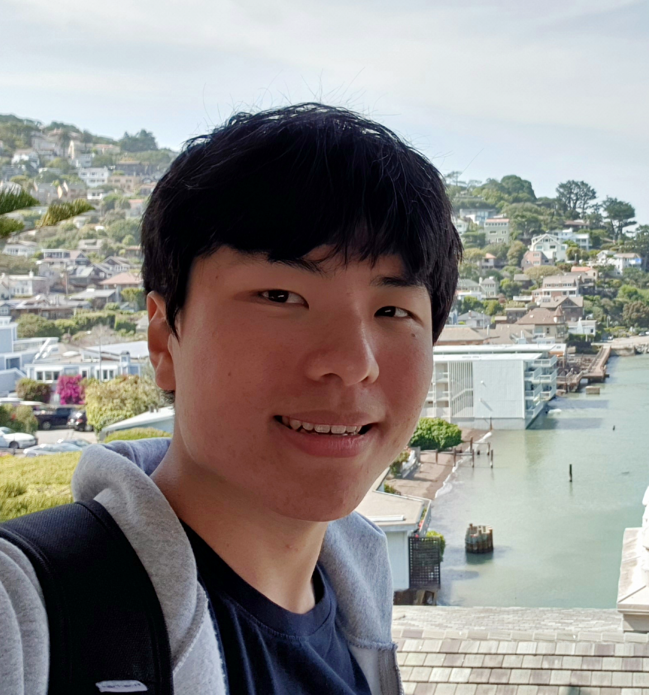
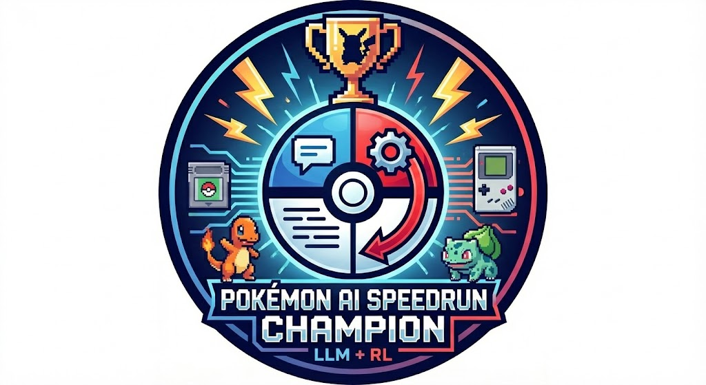
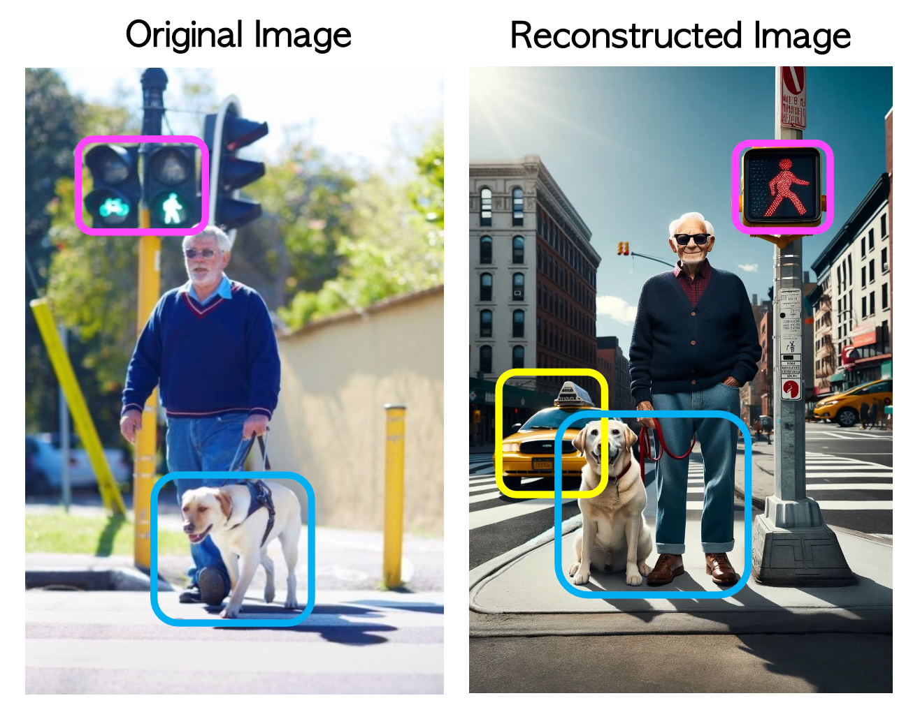
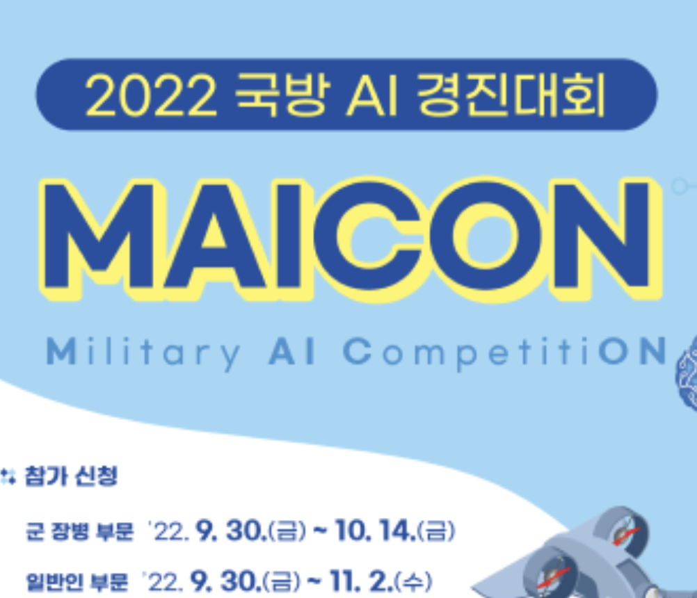
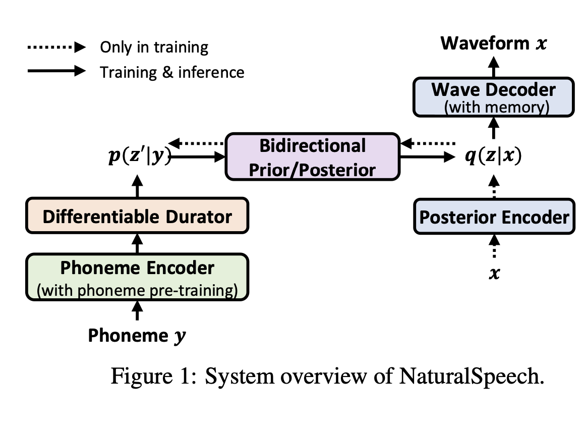
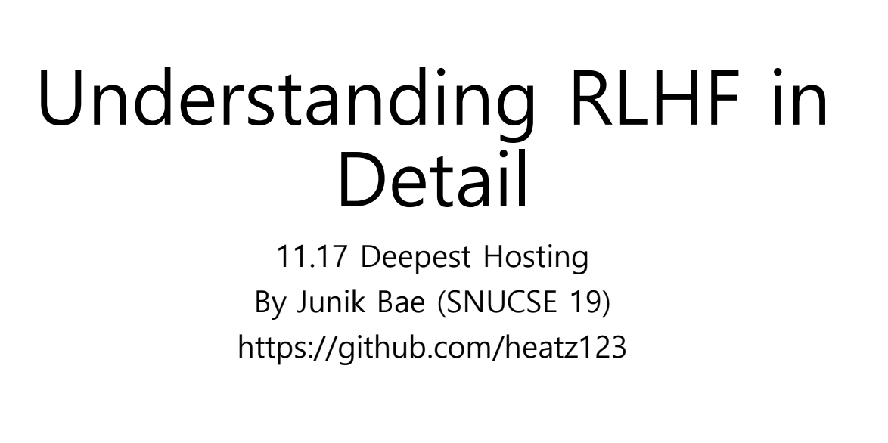
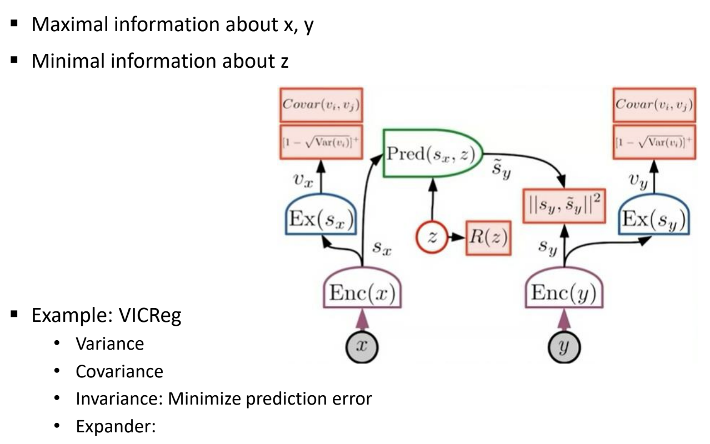

|
Junik Bae
I'm an undergraduate student at Seoul National University majoring in Computer Science and Engineering.
Currently, I am a research intern at Yonsei RLLAB, advised by Prof. Youngwoon Lee.
My long-term research goal is to develop exploration-driven, creative agents that can achieve superhuman performance in open-ended environments.
In particular, I am interested in:
- General unsupervised exploration algorithms (e.g., TLDR)
- Knowledge-guided, sample-efficient exploration (e.g., PokeAgent)
- LLM-based reasoning and agents (e.g., PokeAgent, ESREAL)
In the past, I served in Korean Air Force, specializing in deep learning model development. After that, I joined Naver Cloud Speech team as a research intern.
During my undergraduate studies, I was involved in an undergraduate research program at Language and Data Intelligence Lab, focusing on Natural Language Understanding for code refinement.
Also, I worked as a lab intern at SNU Vision and Learning Lab, studying Retrieval augmented generation in NLP.
Email /
CV /
Github
|

|
Research and Projects
Below are selected publications and projects. See my CV for a complete list.
|
|

|
PokeAgent Challenge: 1st Place in RPG Speedrunning Track
NeurIPS, 2025
Award: $1,500 + $700 (GCP credits), competition report co-authorship
Developed an autonomous Pokemon Emerald speedrun agent for long-horizon decision-making. Built a knowledge-guided RL pipeline using Voyager-style executable skill generation combined with reinforcement learning.
|
|
|
TLDR: Unsupervised Goal-Conditioned RL via Temporal Distance-Aware Representations
Junik Bae,
Kwanyoung Park,
Youngwoon Lee
CoRL, 2024
TLDR is a novel unsupervised GCRL algorithm that leverages Temporal Distance-aware Representations to improve both goal-directed exploration and goal-conditioned policy learning. TLDR significantly outperforms previous unsupervised GCRL methods in achieving a wide variety of states.
|
|

|
Exploiting Semantic Reconstruction to Mitigate Hallucinations in Vision-Language Models
Minchan Kim*,
Minyoung Kim*,
Junik Bae*,
Suhwan Choi,
Sungkyung Kim,
Buru Chang
ECCV, 2024
We introduce ESREAL, a novel unsupervised learning framework designed to reduce hallucinations in vision-language models by accurately identifying and penalizing hallucinated tokens. ESREAL results in significant reductions in hallucinations in models like LLaVA, InstructBLIP, and mPLUG-Owl2, without needing image-text pairs.
|
|
|
2022 Korean AI Competition
2nd Place, Awarded by Korean Minister of Science and Technology: 10,000,000 KRW.
Developed a model targeting the tasks of Korean Free-chat, Command-chat and Dialect-chat recognition using a
variant of wav2vec model. Implemented Transformer LM beam-search decoder for the inference, enabling it to consider long-range contextual information effectively.
|
|

|
2022 Military AI Competition
1st Place, Awarded by Korean Minister of Science and Technology: 20,000,000 KRW
Developed a model for Change Segmentation and Image Denoising tasks, utilizing a variant of U-Net model and several engineering techniques for the tasks.
|
|

|
NaturalSpeech Implementation
(400+ stars) Implemented Microsoft’s NaturalSpeech: End-to-End Text to
Speech Synthesis with Human-Level Quality, which was a SOTA for the LJ Speech Dataset.
|
|
 |
Understanding RLHF in Detail
Hosted a presentation titled "Understanding RLHF in Detail" at Deepest (SNU Deep Learning Research Club), providing an in-depth explanation of Proximal Policy Optimization (PPO) with preferences datasets and Direct Policy Optimization (DPO).
|
|

|
A Path Towards Autonomous AI
Hosted a presentation titled "A Path Towards Autonomous AI" at Deepest (SNU Deep Learning Research Club), which explains motivations for Joint-Embedding Predictive Architecture proposed by Yann LeCun, and some recent works utilizing this architecture.
|
|
{kind=link}